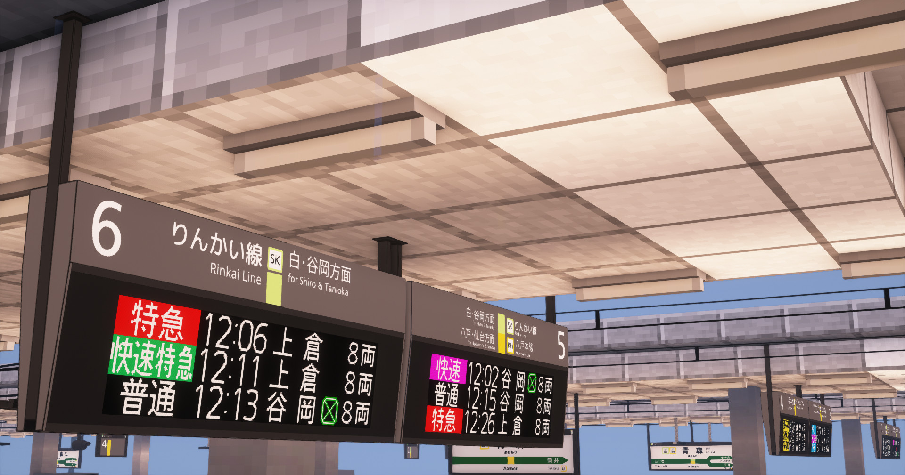
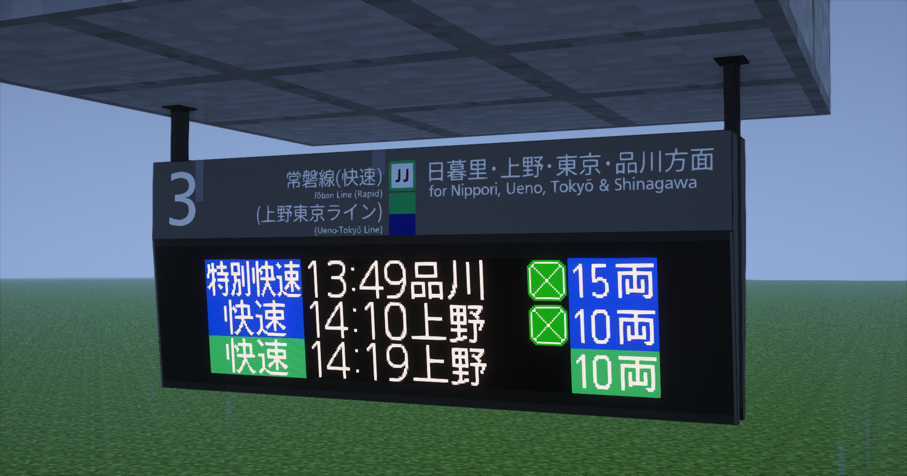
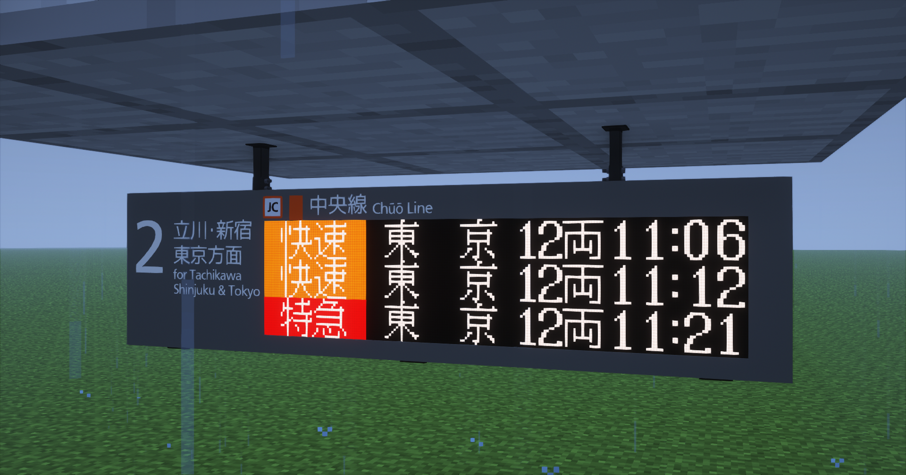
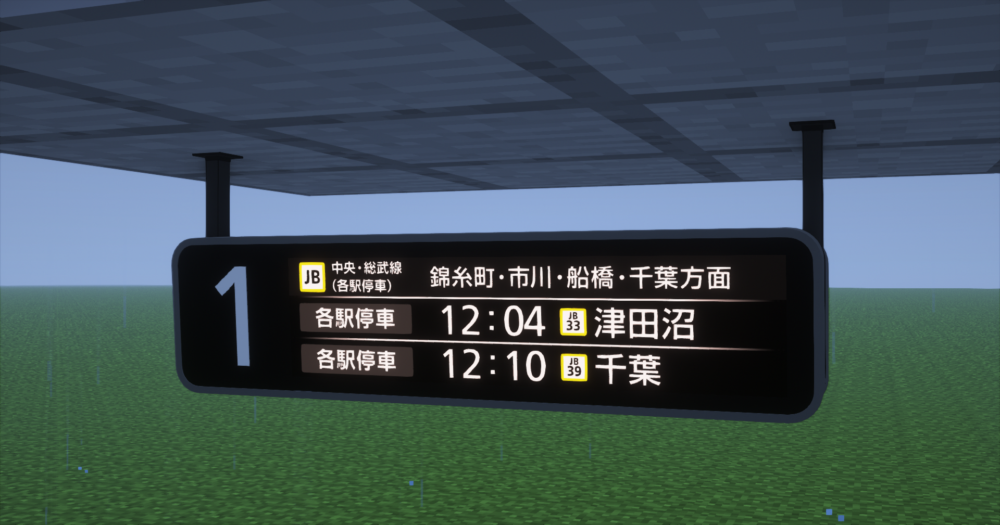

発車標キット ー
JR東日本で主流なものを採用

標準タイプ
JR東日本で多く採用例がある、最もメジャーな形の物。
LED表示部を変更すれば、16dot/24dot , 3色/フルカラー等に対応可。
ダウンロード初期状態では"12桁3段"の物となっています。必要に応じて各自サイズ変更を行ってください。
※画像は24dotフルカラーのもの (北千住採用タイプ)

高さ控えめタイプ
屋根の高さが低い箇所において採用例がある形の物。
低屋根の箇所にしか設置されないため、ホームでの設置はあまり見かけない。
LED表示部を変更すれば、16dot/24dot , 3色/フルカラー等に対応可。
ダウンロード初期状態では"12桁3段"の物となっています。必要に応じて各自サイズ変更を行ってください。
※画像は16dotフルカラーのもの (八王子採用タイプ)

LCDタイプ
都心部において採用例が多くある、表示部が液晶タイプの物。
山手線、京浜東北線、総武緩行線等に多く採用されているタイプ。
※画像は両国駅のもの

可動
初期状態では、jsで最低限表示部の可動化がされています。
LEDタイプの物は 日英二種交互表示・接近表示・通過表示
LCDタイプの物は 日英二種交互表示・接近表示・在線表示
それぞれ色ガラスで変更可能になっています。
↓参考動画